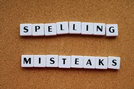

How to Identify Fake News?
-

- Does it have spelling mistakes, other errors?
- Is the publisher someone credible?
- Trust your gut. Do you think it's reliable?
Are there noticeable errors? If there are errors in spelling as well as many grammatical errors in the text, the piece of news could be fake. Is it by a real organisation? Look carefully, and see if the logo matches the official logo of the organisation. It could just be a very good copy. If there are many errors in the piece of information, cropping is clearly visible, the images and logos in the media appear to be squashed, the news is almost definitely a fake. However, move onto the next step to make a complete and accurate evaluation.
Have you heard of the publisher before? If you haven't search them on the internet and see what results you get. If they have been connected to spreading fake information or if there are any reviews or comments that point towards the news being fake, be wary. Check the organisation, is it a real one, and is it a famous one? Lastly, when the author is an individual, check their credentials. While they may not be actively trying to spread fake news, it could be possible that they don't understand the topic well enough and are just a bit confused. Information written by people accomplished in the field they're writing about are more credible than those who aren't. If the author or publisher doesn't seem to be a credible source, it could be a telltale sign that the article/image/media is fake news. The last step is to evaluate your results.
While the previous questions might help you identify fake news, the final decision is up to you. Do you feel that the information is trustworthy? Are you sure that the source is credible. While the previous steps are very helpful and important as well, it's very important to ask yourself this question because more often than not, you only need this step to identify fake news. Of course, if you're still unsure, you can always refer to the other questions for reassurance.